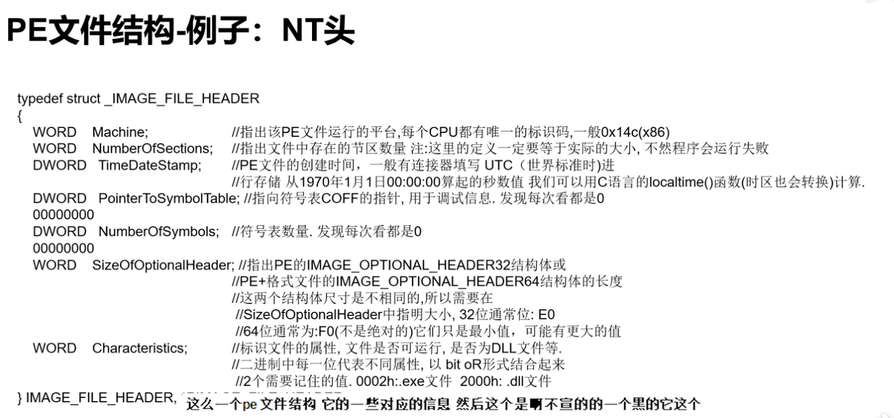
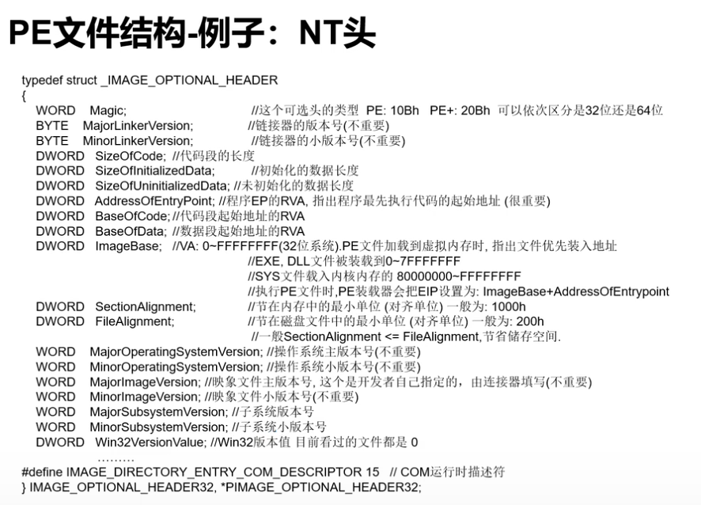

来源: Bilibili
PE文件

NT 头
- DWORD Signature(size:4h); FileHeader(size:14h); OptionalHeader;
- PE头的标志: 50 45 00 00 (即PE..)
- FileHeader
 - OptionalHeader
 - 官方文档
- 06:39 还给了一篇详细介绍的博客链接
ELF 文件
- linux 下的可执行或可链接文件
- 工具：
readelf -S 程序名查看该可执行文件中有哪些section .text代码节.rodata只读数据.plt过程链接表。动态链接器调用从共享库导入的函数需要的代码.data初始化的全局变量.bss未初始化的全局数据- ...
- 需要的时候查文档(14:15博客地址）
静态分析
- 反编译两种形式
- 线性扫描，简单顺序扫描(objdump)
- 递归下降，根据call指令调用关系分析(IDA Pro)
IDA
- 分析32位用ida，64用ida64
快捷操作
F5一键反编译shift+f12String window- 十六进制窗口
- 主界面 右键
text view进汇编
快捷键集合

X交叉引用：在函数名上X, 可以看到该函数被什么时候引用Y当我们认为这个变量不是ida认出的类型时，修改局部变量类型n 为了可读性; 汇编注释 / 伪代码注释G 配合动态分析用a 点一个数据，a, 转成string型ascii码r 数据转成char型f6 回到上一次操作的界面- 花指令：干扰分析的代码
- sub rbp是一个拉高栈的操作
解题流程
- 查壳脱壳
- IDA加载
- (C)看main，shiftf12找关键字符串，双击进去
- 搞懂逻辑后拿py写wp
其他工具
apk: JEB, Android_Killer, jadx
.net: dnSpy